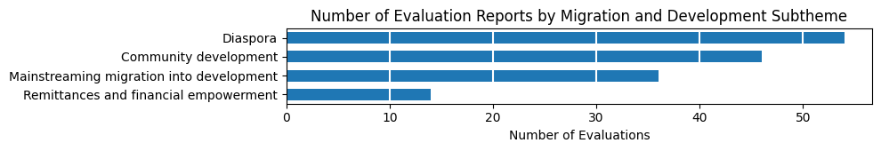
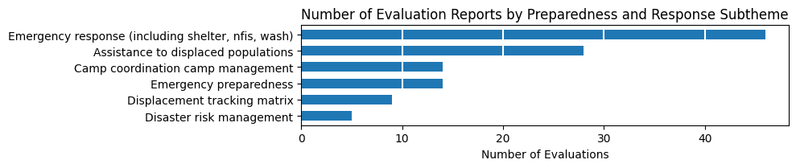
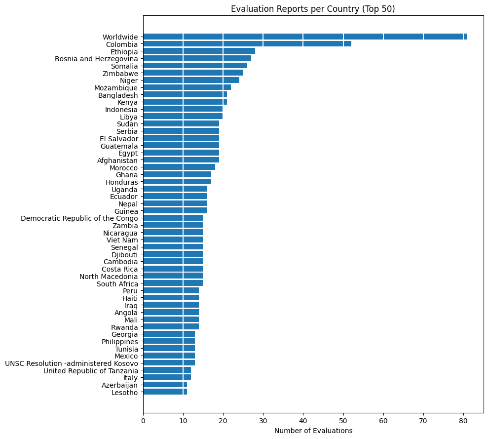

Evaluation report 745
Evaluation brief 284
Annexes 198
Management response 160
Special related reports/documents 60
Evaluation summary 49
External evaluation report 2
nan 1
Internal evaluation report 1
Name: count, dtype: int64IOM Reports Exploration
Exploratory data analysis of
evaluations.json
1. Introduction
This exploratory analysis examines the metadata from IOM’s evaluation repository as a preliminary step before mapping reports to strategic frameworks like the Strategic Results Framework (SRF) and Global Compact for Migration (GCM).
This EDA (Exploratory Data Analysis) helps us understand the structure, coverage, and characteristics of available evaluation reports before using the iomeval package to create evidence maps that tag reports against framework components. These maps will serve as knowledge management tools, making it easier to identify relevant sources, spot coverage gaps, and determine where synthesis reports would be valuable.
The repository includes various document types, from full evaluation reports to management responses and annexes.
2. Repository Overview
2.1 Document Types
2.2 Evaluation Levels
Distribution (%) of evaluations by organizational scope (project, country, regional, thematic, strategic).
Decentralized 85.7
Centralized 11.6
Other 2.7
Name: proportion, dtype: float642.3 Evaluation Scope
Programme/Project 664
Thematic 57
Strategy 30
Synthesis 12
Policy 10
Name: count, dtype: int643. Temporal Trends
3.1 Publication Timeline
The repository contains evaluations spanning from 1985 to 2025, with notable variation in publication volume over time.

4. Thematic Analysis
Evaluations span 20+ migration themes, with Transition Recovery and Migration and Development being the most frequently assessed areas.
4.1 Primary Migration Themes

4.2 Subtheme breakdowns



4.3 Cross-Cutting Themes

5. Geographic Coverage
5.1 Country Coverage
Evaluations cover 150+ countries, with Colombia, Ethiopia, and multi-country (‘Worldwide’) studies being most common.
